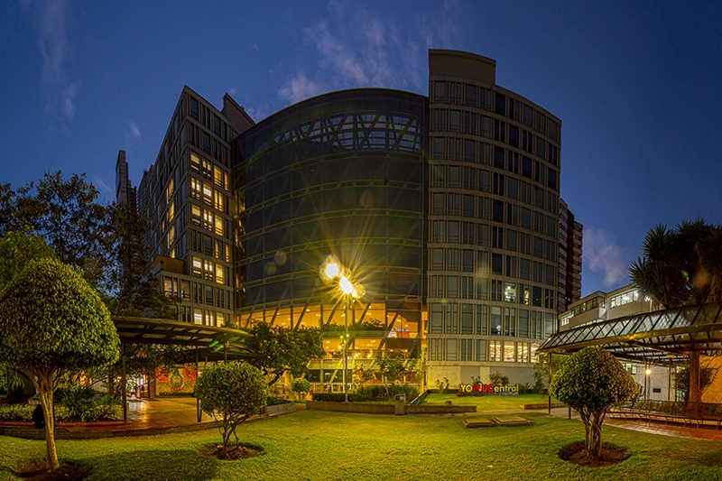

Universidad Central

La Universidad Central es una institución de educación superior de gran trayectoria ubicada en Bogotá, Colombia.
Es en esta prestigiosa institución donde actualmente cumplo mi rol como Ingeniero en Sistemas y Computación, aportando al desarrollo tecnológico y académico en un entorno de excelencia educativa.